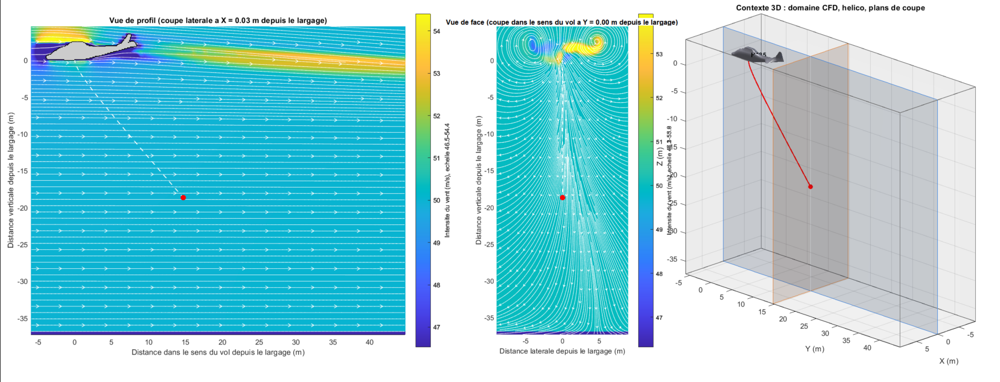
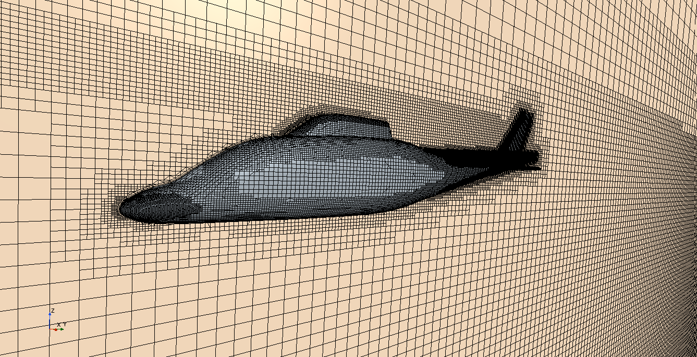
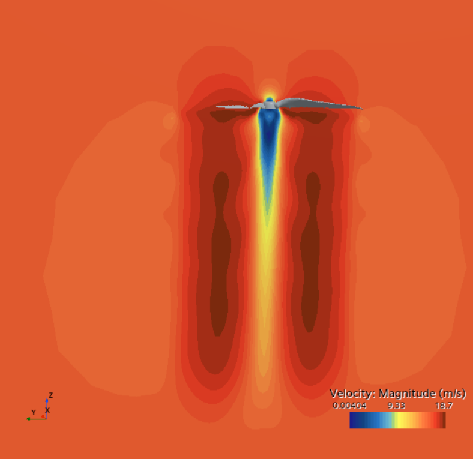

Simulation CFD d'un rotor
Choisir un niveau de modélisation adapté (disque virtuel), construire un domaine de calcul, définir les conditions aux limites et le modèle de turbulence.
PL. 01 · STAGE INGÉNIEUR 4E ANNÉE · JUIN – SEPT. 2026
Étude de l'influence du souffle rotor d'un hélicoptère sur un drone éjecté en vol : simulation CFD du rotor et simulation de la trajectoire du drone.

01 · LE SUJET
Lorsqu'un drone est largué depuis un hélicoptère en vol, il ne tombe pas dans un air calme : il traverse le champ perturbé du rotor principal, avec le downwash et les tourbillons de bout de pale.
L'objectif du stage : comprendre cet environnement aérodynamique et simuler le comportement du drone juste après son éjection, pour déterminer à partir de quand il peut être déployé en sécurité.
C'était un sujet ouvert, que j'ai mené de la recherche bibliographique jusqu'à la construction d'une chaîne de simulation complète.
02 · LA DÉMARCHE
Aérodynamique du rotor, structure du sillage, séparation de charge : positionnement du sujet par rapport à la littérature.
Modélisation du rotor sous STAR-CCM+ par disque virtuel (Virtual Blade Model), choix justifié par la littérature face aux pales résolues.
Développement d'une chaîne MATLAB qui exploite le champ CFD pour calculer la trajectoire et l'attitude du drone.
Définition de critères de sécurité pour évaluer, à chaque instant de la chute, si le drone peut être déployé.
03 · EN IMAGES


04 · COMPÉTENCES ACQUISES
Choisir un niveau de modélisation adapté (disque virtuel), construire un domaine de calcul, définir les conditions aux limites et le modèle de turbulence.
Mettre en place une stratégie de raffinement par zones et des couches de prismes pour capturer la couche limite, en arbitrant entre précision et coût de calcul.
Coder les équations du mouvement d'un corps rigide, intégrer dans le temps et représenter l'attitude en quaternions.
Exporter un champ CFD, l'interpoler dans MATLAB et l'exploiter pour calculer des efforts aérodynamiques le long d'une trajectoire.
Développer mes propres outils de post-traitement : coupes, lignes de courant, vues 3D et animations de trajectoire.
Mener une recherche bibliographique en anglais sur un sujet ouvert, justifier chaque choix de modélisation et garder un regard critique sur ses propres résultats.
05 · LOGICIELS UTILISÉS
06 · EN CONCLUSION
Ce stage m'a permis de mener un sujet de recherche appliquée de bout en bout : partir d'une question ouverte, m'appuyer sur la littérature pour faire des choix de modélisation argumentés, puis construire une chaîne de simulation complète et réutilisable, de la CFD sous STAR-CCM+ jusqu'aux outils de visualisation sous MATLAB.
J'en retiens surtout une méthode : justifier chaque hypothèse, garder un regard critique sur ses propres résultats et savoir identifier ce qui permettrait d'aller plus loin. Une expérience qui a confirmé mon intérêt pour la simulation numérique appliquée à l'aéronautique.